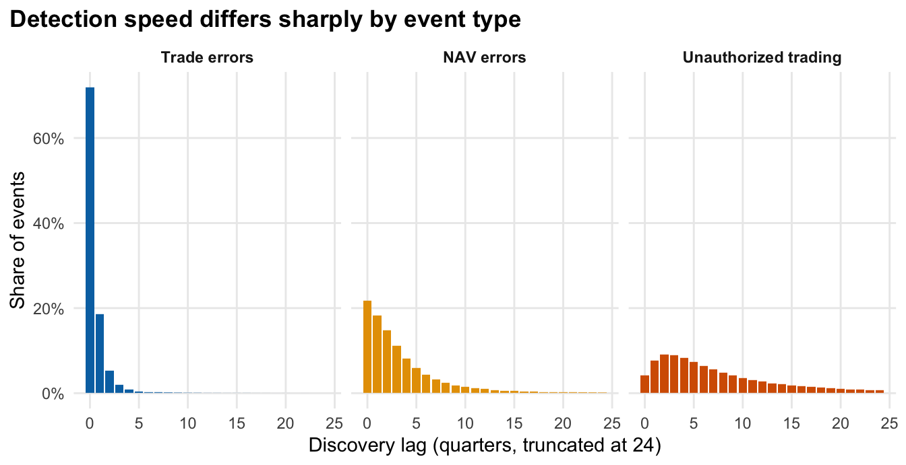

All data are simulated. No internal or client loss data are used, and every parameter is an assumption chosen for plausibility, stored in params.yaml. The point is to have a known ground truth against which estimation methods can be scored, not to describe a real firm.
Generator design
For each event type and origin quarter:
Count ~ Poisson(\(\lambda \times \text{exposure}\)), where exposure grows 1.0% per quarter. Counts are independent across quarters and event types, with no overdispersion or clustering (see Limitations).
Discovery lag (quarters): a mixture of a fast component (geometric) and a slow component (discretised lognormal).
Severity: lognormal body spliced to a generalised Pareto tail, then scaled by \((1 + e \times \text{lag})\), so events found later are larger. The uplift is linear in the lag (not compounding). It is a crude stand-in for an unauthorized position that keeps growing while hidden; \(e\) is the only mechanism by which a loss can change while undiscovered, so every dollar figure for controls on the Control Value page scales with it.
The loss is recorded in full at the discovery date.
The generator keeps the full square, so the true undiscovered loss is always known.
Parameters
Code
tibble(`Event type`= type_lab[types],`Events / qtr`=map_dbl(params$event_types, "lambda"),`Fast-lag weight`=map_dbl(params$event_types, \(x) x$lag$w_fast),`Slow-lag median (qtrs)`=map_dbl(params$event_types, \(x) exp(x$lag$slow_meanlog)),`Median lag (qtrs)`= lag_stats$median[match(type_lab[types], lag_stats$type)],`90th-pct lag (qtrs)`= lag_stats$p90[match(type_lab[types], lag_stats$type)],`Median severity`=map_dbl(params$event_types, \(x) exp(x$severity$meanlog)),`Tail prob.`=map_dbl(params$event_types, \(x) x$severity$p_tail),`Severity uplift per lag qtr (linear, e)`=map_dbl(params$event_types, \(x) x$severity$lag_elasticity)) |> gt::gt() |> gt::fmt_currency(`Median severity`, decimals =0) |> gt::fmt_number(c(`Events / qtr`, `Slow-lag median (qtrs)`), decimals =1) |> gt::fmt_number(c(`Fast-lag weight`, `Tail prob.`, `Severity uplift per lag qtr (linear, e)`), decimals =2) |> gt::tab_source_note("All values are judgement-based assumptions (status: assumption in params.yaml), with no calibration to public loss data. Total expected loss is checked against a 10-15 bps of AUM target in the sanity check below; plausible ranges are given beside each value in params.yaml.")
Table 1
Event type
Events / qtr
Fast-lag weight
Slow-lag median (qtrs)
Median lag (qtrs)
90th-pct lag (qtrs)
Median severity
Tail prob.
Severity uplift per lag qtr (linear, e)
Trade errors
60.0
0.85
1.6
0
1
$2,441
0.03
0.02
NAV errors
6.0
0.50
4.5
2
9
$29,733
0.05
0.05
Unauthorized trading
0.3
0.10
7.4
6
22
$242,802
0.08
0.08
All values are judgement-based assumptions (status: assumption in params.yaml), with no calibration to public loss data. Total expected loss is checked against a 10-15 bps of AUM target in the sanity check below; plausible ranges are given beside each value in params.yaml.
Discovery-lag distributions
Code
lags |>filter(lag <=24) |>count(type, lag) |>mutate(share = n /2e5, .by = type) |>mutate(type =factor(type, levels = type_lab)) |>ggplot(aes(lag, share, fill = type)) +geom_col(width =0.85) +facet_wrap(~type, nrow =1) +scale_fill_manual(values = type_col, guide ="none") +scale_y_continuous(labels = scales::label_percent()) +labs(x ="Discovery lag (quarters, truncated at 24)", y ="Share of events", title ="Detection speed differs sharply by event type") +theme_op()

Figure 1: Simulated share of events by discovery lag, per event type (200,000 draws each).
Median lags are Trade errors: 0, NAV errors: 2, Unauthorized trading: 6 quarters. The share of events discovered after the 40-quarter window is Trade errors 0.0%, NAV errors 0.1%, Unauthorized trading 2.7%.
Few events fall outside the window, but for unauthorized trading they matter. Those events are scaled by up to \(1 + e \times 40 =\) 4.2 times their initial size, and the denominator is only the loss that is still undiscovered. So the 2.7% of unauthorized-trading events beyond the window carry about 40% of the true undiscovered unauthorized-trading loss at the evaluation date (baseline, annual granularity, 200 databases). This is why a chain-ladder method confined to the window misses so much of that line.
Sanity check: size of the losses
An uncalibrated simulator can easily produce implausible losses, so we check the scale against an assumed AUM of $5.0B. Expected annual incurred loss (all events, discovered or not) over 200 simulated databases:
Code
sims <- parallel::mclapply(1:200, \(r) {simulate_database(base, rep = r) |>mutate(year =ceiling(origin /4)) |>summarise(inc =sum(severity), n =n(), .by =c(type, year))}, mc.cores =max(1L, parallel::detectCores() -2L)) |>bind_rows(.id ="rep")n_years <- params$horizon$n_origin /4by_type <- sims |>summarise(`Mean loss / yr`=sum(inc) / (n_distinct(rep) * n_years), `Events / yr`=sum(n) / (n_distinct(rep) * n_years), .by = type) |>mutate(Type = type_lab[type], `bps of AUM`=`Mean loss / yr`/ aum *1e4)# Single-year totals (all types), pooled over databases and origin years: the same basis as VaR on the Control Value page.year_totals <- sims |>summarise(inc =sum(inc), .by =c(rep, year))bind_rows( by_type |>select(Type, `Events / yr`, `Mean loss / yr`, `bps of AUM`),tibble(Type ="All types", `Events / yr`=sum(by_type$`Events / yr`), `Mean loss / yr`=mean(year_totals$inc), `bps of AUM`=mean(year_totals$inc) / aum *1e4)) |>mutate(Type =factor(Type, levels =c(type_lab, "All types"))) |>arrange(Type) |> gt::gt() |> gt::fmt_number(c(`Events / yr`, `bps of AUM`), decimals =1) |> gt::fmt_currency(`Mean loss / yr`, decimals =0) |> gt::tab_source_note(sprintf("Single-year total loss, pooled over %d databases x %d origin years: median %.1f bps, 95th percentile %.1f bps of AUM (VaR95 %s). Targeted range: 10-15 bps mean; this is an assumption, not a benchmark.",n_distinct(sims$rep), n_years, median(year_totals$inc) / aum *1e4, quantile(year_totals$inc, .95) / aum *1e4, fmt_usd(quantile(year_totals$inc, .95), 2)))
Table 2
Type
Events / yr
Mean loss / yr
bps of AUM
Trade errors
294.0
$1,262,567
2.5
NAV errors
29.2
$2,342,539
4.7
Unauthorized trading
1.4
$2,430,188
4.9
All types
324.6
$6,035,294
12.1
Single-year total loss, pooled over 200 databases x 10 origin years: median 8.6 bps, 95th percentile 23.0 bps of AUM (VaR95 $11.48M). Targeted range: 10-15 bps mean; this is an assumption, not a benchmark.
Scenarios
Scenario
What changes
Baseline
Stable detection, proportional development
Heavy-tail shock
Two very large unauthorized-trading losses injected: $60M originating in quarter 12 and discovered in quarter 27 (reported), and $40M originating in quarter 20 and discovered in quarter 42 (after the evaluation date, so undiscovered)
Control improvement
Applies to all three event types. For every event whose discovery quarter \(d\) is after the change quarter \(c =\) 24, the discovery quarter becomes \(c + \lfloor (d - c)(1 - r) \rfloor\) with \(r =\) 50%. This covers both events already pending at \(c\) and events that originate afterwards. Severity is drawn before the shift, so only timing changes, not the loss amount.
Exposure growth
Volume growth rises to 3% per quarter
The two example controls on the Control Value page work differently from the control-improvement scenario above. They shift the lag-distribution parameters (additively, for the event types listed in params.yaml) for the whole simulated history before severities are drawn, so a faster-detected event is also smaller through the \((1 + e \times \text{lag})\) term.